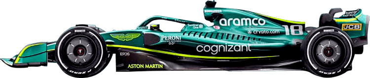

|
Prénom Nom : Sebastian Vettel Age : 34 ans Nationalité : Allemand Nombre de poles : 57 Victoires : 53 Champion du monde : 2010, 2011, 2012, 2013 Note du chef : 10/10 Commentaire du chef : "Pilote exceptionnel et homme exceptionnel tout court. Seule personne bien chez Aston Martin (jsp ce qu'il branle là-bas)." |
Prénom Nom : Lance Stroll Age : 23 ans Nationalité : Canadien (Belge) Nombre de poles : 1 Victoires : 0 Champion du monde : 0 Note du chef : 3/10 Commentaire du chef : "Gueule de con, fils à papa, nul." |
|  |
|
|